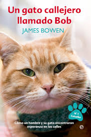
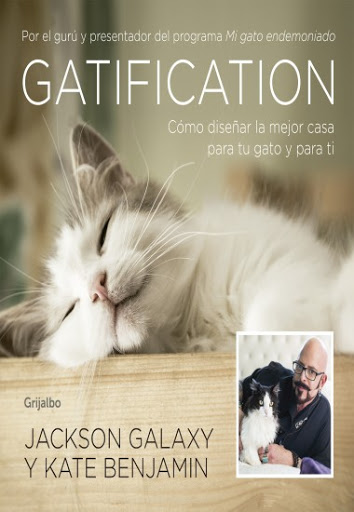

Un gato callejero llamado Bob
Cuando el músico callejero James Bowen encontró a un gato pelirrojo herido
acurrucado en el descansillo de su piso, no podía imaginar hasta
qué punto su vida iba a cambiar. James vivía al día en las calles
de Londres y lo último que necesitaba era una mascota

Gatification
Entiende a tu gato y hazle la vida más fácil con Jackson Galaxy y Kate Benjamin,
expertos en educación gatuna.
Por el gurú y presentador del programa
"Mi gato endemoniado" Incluye propuestas DIY para construir
muebles y juguetes para tus gatos. ¡Miau!
¿No logras entender a tu gato?
En mi casa no entra un gato
Divertidas, desenfadadas y emotivas, estas memorias gatunas desvelan todos
los entresijos del mundo de los gatos. Y mucho más. Porque, en realidad,
¿quién no ha sido primerizo alguna vez?"
.